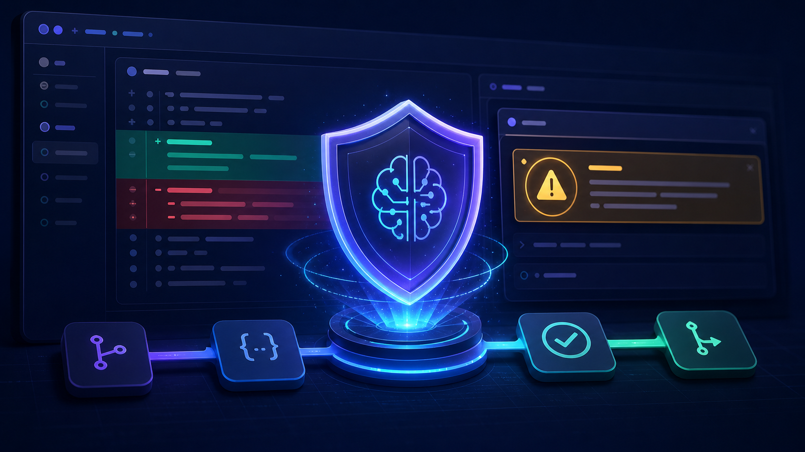

GitHub Adds AI-Powered Security Findings Directly to Pull Requests
Published by Lance Adhikari on July 14, 2026 · 6 min read

A pull request is more than a place to review whether code works. It is also one of the best opportunities to catch a security issue before that code reaches the main branch. GitHub is expanding that opportunity by bringing AI-powered security detections directly into pull requests.
What Happened?
GitHub code scanning can now display findings produced by its AI detection engine inside a pull request. The new detections broaden scanning to some languages and frameworks that are not currently covered by CodeQL's built-in analysis. GitHub labels these results with AI, helping developers distinguish them from regular CodeQL findings.
The AI analysis runs automatically when an enabled pull request is opened or updated. Results can appear as they become available, so a team does not have to wait for every analysis source to finish before reviewing the first findings.
This feature is currently in public preview. Its AI findings are informational and do not automatically block a pull request from being merged.
Why This Matters
Security testing is moving earlier in the software-development process. This approach is often called shifting security left: instead of waiting until an application is deployed, teams look for weaknesses while the code is still being written and reviewed.
A warning found in a pull request gives the developer immediate context. The changed lines, discussion, automated checks, and reviewer feedback are all in one place. Fixing a vulnerability at this stage is generally easier and less expensive than correcting it after the code has been merged, released, or used by customers.
AI Findings Still Require Human Judgment
An AI-generated warning is evidence to investigate, not proof that a vulnerability exists. AI tools can produce false positives, misunderstand application-specific protections, or miss important details elsewhere in the codebase.
Before accepting a finding, a developer should:
- Inspect the highlighted code and the surrounding functions.
- Trace where the input comes from and where the data goes.
- Check whether validation, encoding, authorization, or another control already reduces the risk.
- Determine whether an attacker could realistically reach and exploit the code path.
- Test the proposed fix and confirm that it does not introduce a new problem.
This review process is why GitHub's preview findings are informational. The tool can direct attention to suspicious code, but a person still needs to understand the system and make the final security decision.
Connected Computer Science Concept: Static Analysis
This announcement connects to static analysis. A static-analysis tool examines source code without running the program. It looks for patterns that may indicate a defect or security weakness, such as unsafe input handling, injection risks, exposed secrets, or incorrect use of a security-sensitive API.
Dynamic analysis takes a different approach by testing a running application. Both approaches are valuable: static analysis can catch suspicious code early, while dynamic testing can reveal problems that appear only when the program executes.
Term to Learn: SAST
SAST stands for Static Application Security Testing. SAST applies static-analysis techniques specifically to application security. It is commonly included in an automated development pipeline so that new code is checked consistently.
GitHub's new feature is not simply CodeQL with a different label. GitHub states that its AI detection engine performs the AI analysis, while CodeQL default setup must be enabled because the AI engine relies on it to function.
How It Fits Into a Basic CI/CD Pipeline
- Create a branch: A developer makes a focused code change away from the main branch.
- Open a pull request: The change becomes visible for discussion and review.
- Run automated checks: Tests, formatting tools, builds, CodeQL, and available security scanners examine the change.
- Investigate findings: The developer and reviewers decide whether each warning is valid and make any necessary corrections.
- Merge and deploy: Once the code and checks are acceptable, the pull request can enter the main branch and continue through the delivery process.
For a small GitHub project, learning this workflow is a practical way to understand how pull requests, automated checks, CodeQL, SAST, and CI/CD work together.
Availability and Requirements
During the public preview, the feature is available on GitHub.com for customers with GitHub Code Security, part of GitHub Advanced Security. An enterprise owner must first allow it, the organization must enable it, and the repository must use CodeQL default setup. GitHub also states that preview usage requires a GitHub Copilot license and consumes AI credits when detections run.
Key Takeaways
- GitHub can surface AI-generated security detections directly in pull requests.
- The AI engine expands potential coverage beyond CodeQL's currently supported languages and frameworks.
- Findings are labeled as AI-generated, are informational, and do not block merges.
- Developers must still verify the code path and decide whether a warning represents a real vulnerability.
- The feature is a useful example of static analysis and SAST becoming part of everyday CI/CD workflows.
Source
This post is based on GitHub's July 14, 2026 announcement, Code scanning shows AI security detections on pull requests.